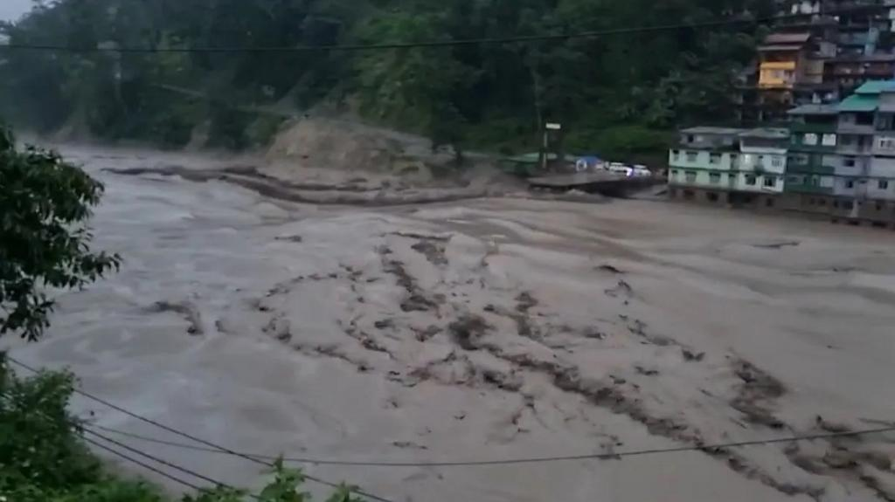
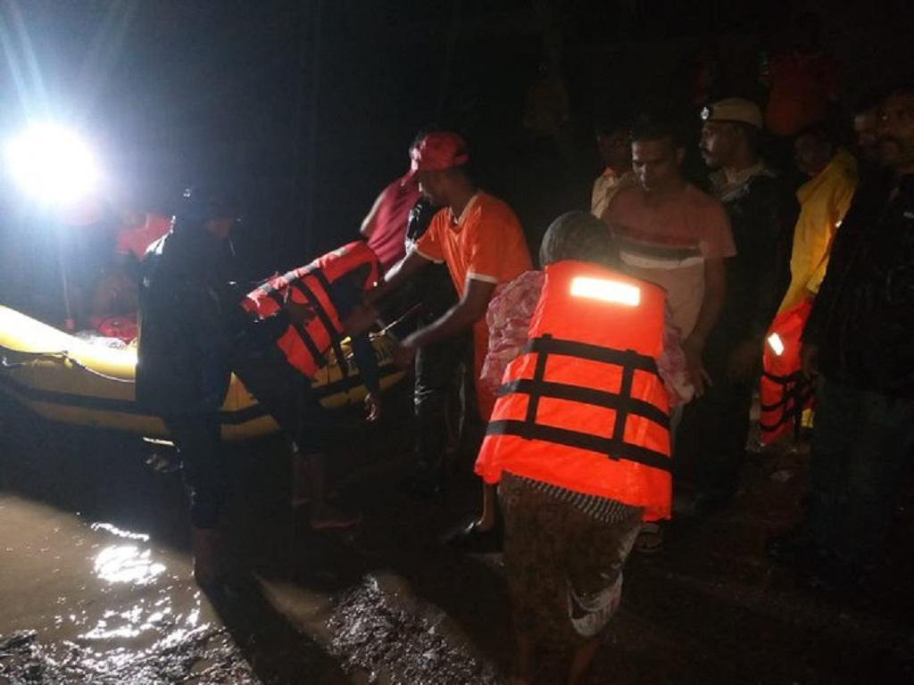

The Narmada and other rivers are in full spate as severe rains pounded portions of Gujarat on September 17, 2023. The rivers inundated several low-lying areas and cut off many villages in the central and southern regions of the state.
The water level of the Narmada around the Golden Bridge in Bharuch district touched 37 feet — roughly nine feet beyond the danger mark as of September 17, officials told daily Telangana Today.
While authorities claim to have rescued thousands of people, some experts and political parties attributed the situation to the lethargic and unaccountable actions of Sardar Sarovar Project (SSP) Dam operators. They called the floods “avoidable”.
Himanshu Thakkar, an environmental activist and water expert, told Down To Earth:
These floods could have been significantly lower and much less disastrous both for Sardar SSP upstream and downstream areas if SSP authorities had taken action earlier based on information available.
The state government refused to release water from the dam when farmers needed it. Instead, the Bharatiya Janata Party government held it until September 17, the day of Prime Minister Narendra Modi’s birthday, said the opposition Congress.
Thakkar and the Aam Aadmi Party also raised similar allegations.
This is not the first time that Gujarat authorities have thus wished a happy birthday to the Prime Minister. They have done that in the past, too, almost every year since 2017, said Thakkar.
“In September 2020, in the process, they created a similar avoidable flood disaster downstream of SSP dam. Gujarat authorities, in fact falsely claimed then that they saved Bharuch,” he added.
However, according to authorities, around 10,000 people from the Narmada, Bharuch, Vadodara, Dahod and Godhra districts were relocated from low-lying areas, and 207 stuck in floodwaters were rescued from various locations.
“As a precautionary measure, we have shifted 338 people from low lying areas during the night as we were warned in advance. We have shifted people since we believe the (river) level will reach 36 feet,” Bharuch collector Tushar Sumera told The Times of India.
Other than Narmada, rivers such as Orsang, Heran, Mahi, Meshri and Panam are swollen due to the release of water from dams. These rivers have been triggering inundation in low-lying areas in central Gujarat, such as Mahisagar.
On September 17, the authorities opened 23 of the 30 gates of the Sardar Sarovar Dam. The facility reached its full reservoir level (FRL) of 138.68 metres for the first time this monsoon, officials told daily The Times of India.
Some 1.8 million cusecs of water have been released from the dam as the surplus water from the catchment areas of bordering Madhya Pradesh would aggravate the situation.
Schools and other educational institutions in the Dahod, Bharuch and Godhra districts are being closed on September 18 due to the anticipated increase in rainfall.
On September 18, the India Meteorological Department (IMD) issued red and orange alerts in parts of Gujarat. The department predicted very heavy rainfall in Aravalli, Kheda, Panchmahal, Dahod and Mahisagar. These areas are on red alert.
On the other hand, Sabarkantha, Mahesana and Ahmedabad are on orange alert.
After Ahmedabad experienced 76 mm of rain in 12 hours, ending at 6 pm on September 17, various districts were waterlogged. Daily lives have been disrupted and underpasses were temporarily closed by the authorities.
After central, now eastern Himalayas? Glacial lake outburst in North Sikkim sparks alert across the state

A devastating glacial lake outburst has struck North Sikkim, sending shockwaves across the northeastern state. The lake burst occurred upstream of Chungthang in the Mangan district, resulting in a sudden and alarming rise in the water level of the Teesta River.
Local reports indicate that the aftermath of this natural disaster has been severe. Two bridges, including the vital Phidang Bridge in Lower Dzongu, connecting Dzongu with the rest of the state, have been washed away, severing crucial transportation links.
Eyewitnesses have reported a heavy inflow of muddy water in water bodies throughout the district. Consequently, residents in low-lying areas, such as Singtam and Rangpo towns in Gangtok and Pakyong districts, have been issued alerts. Authorities have strongly advised people to avoid venturing near water bodies due to the dangerous conditions.
The situation has escalated further with damage to the dam at Chungthang in Sikkim, causing a sudden overflow and a significant rise in water levels in the Teesta River. As a result, the road leading to Sikkim and Kalimpong is currently closed, further isolating the affected regions.
In response to this critical situation, residents of Tista, Rangpho, Singtam, and other adjoining areas have been urged to evacuate their homes and relocate to higher-altitude regions for their safety
Swollen Narmada displaces thousands in Gujarat — was this an “avoidable” disaster?
